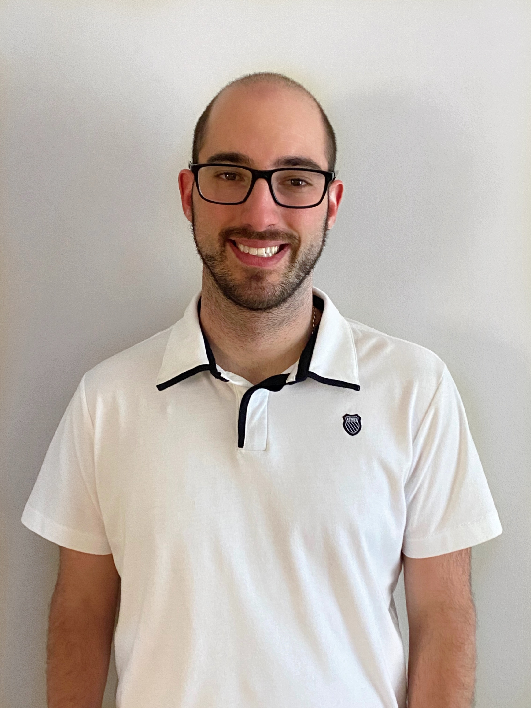
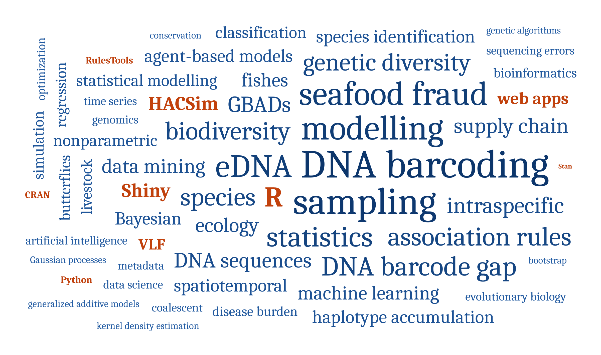

HACSim
R package and R Shiny web application

He/Him/His
BSc. (Hons.), MBinf., PhD.
Adjunct Professor
School of Computer Science
Department of Integrative Biology
Affiliated Faculty, One Health Institute
University of Guelph
I leverage AI/ML/Data Science/Big Data methods to help researchers find meaningful signal in a vast sea of noise.
I am a highly motivated and passionate bioinformatician, data scientist and statistician naturally driven by curiosity to use mathematical, statistical and computational methods to answer fundamental and applied research questions in biodiversity science, evolutionary biology, ecology, genomics and bioinformatics, particularly related to molecular species identification and discovery through DNA barcoding, environmental DNA (eDNA) and other DNA-based approaches.
My academic work and research interests can best be described as computational molecular biodiversity science. Biodiversity is under threat in a rapidly changing world, where mitigation requires innovative and collaborative solutions from multiple disciplines. DNA-based specimen identification and species discovery through techniques like DNA barcoding and eDNA offer promising ways forward, yet produce overwhelming amounts of data.
R logo © R Foundation, used under CC-BY-SA 4.0. The Stan name and logo are trademarks of NumFOCUS.
The terms that come up most on this site and in my CV. The more often a term appears, the larger it is.

| Term | Mentions | Type |
|---|---|---|
| DNA barcoding | 33 | Topic or method |
| sampling | 30 | Topic or method |
| modelling | 25 | Topic or method |
| seafood fraud | 24 | Topic or method |
| eDNA | 22 | Topic or method |
| statistics | 18 | Topic or method |
| R | 17 | Software or tool |
| DNA barcode gap | 16 | Topic or method |
| association rules | 15 | Topic or method |
| biodiversity | 14 | Topic or method |
| species | 14 | Topic or method |
| genetic diversity | 13 | Topic or method |
| GBADs | 11 | Topic or method |
| intraspecific | 11 | Topic or method |
| DNA sequences | 10 | Topic or method |
| supply chain | 10 | Topic or method |
| data mining | 9 | Topic or method |
| ecology | 9 | Topic or method |
| fishes | 8 | Topic or method |
| HACSim | 8 | Software or tool |
| machine learning | 8 | Topic or method |
| Shiny | 8 | Software or tool |
| agent-based models | 7 | Topic or method |
| Bayesian | 7 | Topic or method |
| haplotype accumulation | 7 | Topic or method |
| spatiotemporal | 7 | Topic or method |
| species identification | 7 | Topic or method |
| classification | 6 | Topic or method |
| nonparametric | 6 | Topic or method |
| statistical modelling | 6 | Topic or method |
| web apps | 6 | Software or tool |
| butterflies | 5 | Topic or method |
| livestock | 5 | Topic or method |
| regression | 5 | Topic or method |
| simulation | 5 | Topic or method |
| VLF | 5 | Software or tool |
| bioinformatics | 4 | Topic or method |
| disease burden | 4 | Topic or method |
| artificial intelligence | 3 | Topic or method |
| coalescent | 3 | Topic or method |
| data science | 3 | Topic or method |
| evolutionary biology | 3 | Topic or method |
| genomics | 3 | Topic or method |
| metadata | 3 | Topic or method |
| optimization | 3 | Topic or method |
| sequencing errors | 3 | Topic or method |
| time series | 3 | Topic or method |
| bootstrap | 2 | Topic or method |
| conservation | 2 | Topic or method |
| CRAN | 2 | Software or tool |
| Gaussian processes | 2 | Topic or method |
| generalized additive models | 2 | Topic or method |
| genetic algorithms | 2 | Topic or method |
| kernel density estimation | 2 | Topic or method |
| Python | 2 | Software or tool |
| RulesTools | 2 | Software or tool |
| Stan | 1 | Software or tool |
Counts come from the text of this site and my CV. Names, venues and very general words are left out. Open the full-size image.
These are simulated distances between DNA barcodes. Change the bin width and watch the gap between the two groups open and close.
| Bin (% distance) | Within species | Between species |
|---|
Simulated data for illustration, not measurement. The DNA barcode gap is the distance between the largest within-species genetic distance and the smallest between-species genetic distance, and those two values do not change with the bin width. The curves are kernel density estimates. For the argument behind this figure, see Phillips, Gillis and Hanner (2022).
Phillips, J.D. and *De Vuono-Fraser, F.A. (2026). Swimming in deep uncertainty: How proper statistical modelling can help expose seafood product mislabeling. CHANCE. DOI: 10.1080/09332480.2026.2725526
Phillips, J.D. and *De Vuono-Fraser, F.A. (2026). Statistical modelling of seafood fraud highlights uncertainties in products from Metro Vancouver, British Columbia, Canada: Revisiting Hu et al. (2018). Journal of Food Science, 91: e71201. DOI: 10.1111/1750-3841.71201
*Toth, N., Antonie, L., Hanner, R.H., Gillis, D.J., and Phillips, J.D. Mining association rules for targeted spatiotemporal aquatic environmental DNA (eDNA) sampling. bioRxiv preprint, submitted to Oikos. DOI: 10.64898/2026.09.16.752056
Computational statistics, data science, machine learning, statistical modelling, biodiversity informatics, and eDNA and DNA barcoding.
Affiliated Faculty, One Health Institute
University of Guelph
Adjunct Professor, School of Computer Science
University of Guelph
Postdoctoral Fellow, GBADs Informatics Team
Stacey Lab, School of Computer Science, University of Guelph
Supervisor: Dr. Deborah Stacey
Postdoctoral Fellow, Gillis Lab and Hanner Lab
School of Computer Science and Department of Integrative Biology, University of Guelph
Supervisors: Drs. Daniel Gillis and Robert Hanner
Postdoctoral Fellow, Hanner Lab
Department of Integrative Biology, University of Guelph
Supervisor: Dr. Robert Hanner
Ph.D. in Computational Sciences, University of Guelph
Co-advisors: Dr. Daniel Gillis and Dr. Robert Hanner. Advisory committee: Dr. Deborah Stacey and Dr. Graham Taylor.
Master of Bioinformatics, University of Guelph
Co-advisors: Dr. Robert Hanner and Dr. Daniel Ashlock.
Major paper: Assessing DNA Barcode Haplotype Sampling Diversity in the Ray-finned Fishes (Chordata: Actinopterygii)
BSc. (Hons.) in Biological Science, University of Guelph
Coursework in bioinformatics, ecology, evolutionary biology, comparative animal physiology, genetics, mathematics, and statistics.
My student, Richard Cui, gave a talk at the Applied Mathematics, Modelling, and Computational Science (AMMCS) conference in Waterloo, Ontario, Canada.
My student, Nikolett Toth, and I presented a poster and gave a talk, respectively, at the 3rd Pathway to Increase Standards and Competency in Environmental DNA Surveys (PISCeS) conference in Guelph, Ontario, Canada.
A paper with my student, Nikolett Toth, on association rule mining of eDNA datasets was accepted to the 39th annual Canadian Artificial Intelligence Conference in Vancouver, British Columbia, Canada.
My student, Richard Cui, was featured in a College of Computational, Mathematical, and Physical Sciences (CCMPS) Research Highlights article: Reeling in the Catch: Modelling the Dynamics of Market Fraud Within the Seafood Supply Chain.
I am serving on the Program Committee of the 39th Canadian Conference on Artificial Intelligence as a paper reviewer.
I taught CIS*1910 (Discrete Structures in Computing I).
My student, Nikolett Toth, was featured in a College of Engineering and Physical Sciences (CEPS) Research Highlights article: eDNA Collection Gets a Tech Upgrade.
I received a $40,000 CAD Food from Thought Advancing Research Impact Fund (ARIF) Livestock Innovation grant to develop the Dynamic Population Model (DPM) as part of my work with GBADs.
Two book chapters on DNA barcoding for specimen identification and species delimitation were published online by Springer Nature.
A preprint on GBADs informatics strategy, data quality, and model interoperability became available. It has since been published in the WOAH Scientific and Technical Review.
My preprint on statistical modelling of seafood mislabelling in Canada is now on bioRxiv.
I attended the GBADs Technical Workshop in Liverpool, England.
I was appointed Adjunct Professor in the School of Computer Science at the University of Guelph.
I joined the Global Burden of Animal Diseases (GBADs) Informatics team at the University of Guelph.
The VLF paper was published.
My paper introducing and outlining the VLF R package was accepted for publication in the Biodiversity Data Journal.
I received $30,000 CAD in funding from the Food from Thought Advancing Research Impact Fund (ARIF) to develop a Bayesian hierarchical binary logistic time-series regression model of seafood fraud in the Canadian supply chain.
My recent paper arguing a lack of statistical rigor in DNA barcoding was featured as a University of Guelph College of Engineering and Physical Sciences (CEPS) Research Highlights article: Mind the Gap – The DNA Barcode Gap, That Is.
My opinion paper on statistical aspects of DNA barcoding and the DNA barcode gap was published in Frontiers in Ecology and Evolution.
Research grants
Food From Thought Advancing Research Impact Fund (ARIF), Livestock Innovation Grant, University of Guelph. $40,000 CAD
A Modular Decision- and Policy-Making Tool for Global Livestock Disease Burden Assessment. Role: co-applicant.
Food From Thought Advancing Research Impact Fund (ARIF), University of Guelph. $30,000 CAD
Forecasting Seafood Fraud Occurrence in the Supply Chain Within Major Canadian Cities Using Bayesian Hierarchical Binary Logistic Time-Series Regression Modeling. Role: HQP.
Scholarships, travel awards and assistantships
SoCS Travel Grant, University of Guelph. $1,000 CAD
Arthur D. Latornell Graduate Travel Grant, University of Guelph. $500 CAD
Graduate Teaching Assistantships, University of Guelph. $35,000 CAD
Graduate Research Assistantships, University of Guelph. $11,000 CAD
CPES Graduate Dean’s Scholarship, University of Guelph. $3,500 CAD
CPES Graduate Excellence Entrance (GEE) Scholarship, University of Guelph. $30,000 CAD

9 peer-reviewed journal articles (7 as first author), 2 book chapters, and 3 first-author manuscripts in preprint or to be submitted. I am senior (last) author on 2 student-led manuscripts. Citation counts are on Google Scholar.
* marks a student under my direct supervision.
Phillips, J.D. and *De Vuono-Fraser, F.A. (2026). Swimming in deep uncertainty: How proper statistical modelling can help expose seafood product mislabeling. CHANCE. DOI: 10.1080/09332480.2026.2725526
Phillips, J.D. and *De Vuono-Fraser, F.A. (2026). Statistical modelling of seafood fraud highlights uncertainties in products from Metro Vancouver, British Columbia, Canada: Revisiting Hu et al. (2018). Journal of Food Science, 91: e71201. DOI: 10.1111/1750-3841.71201
Raymond, K., Sobkowich, K.E., Phillips, J.D., Nguyen, L., McKechnie, I., Mohideen, R.N., Fitzjohn, W., Szurkowski, M., Davidson, J., Rushton, J., Stacey, D.A., and Bernardo, T.M. (2024). GBADs informatics strategy: User-centric tools, data quality, and model interoperability. WOAH Scientific and Technical Review, 43: 96–107. DOI: 10.20506/rst.43.3522
Phillips, J.D., Athey, T.B.T., Hanner, R.H., and McNicholas, P.D. (2023). VLF: An R package for the analysis of very low frequency variants in DNA sequences. Biodiversity Data Journal, e96480. DOI: 10.3897/BDJ.11.e96480
Phillips, J.D., Gillis, D.J., and Hanner, R.H. (2022). Lack of statistical rigor in DNA barcoding likely invalidates the presence of a true species’ barcode gap. Frontiers in Ecology and Evolution, 10: 859099. DOI: 10.3389/fevo.2022.859099
D’Ercole, J., Dină, V., Opler, P.A., Kondla, N.G., Schmidt, C.B., Phillips, J.D., Robbins, R., Burns, J.M., Miller, S.E., Grishin, N., Zakharov, E.V., deWaard, J.R., Ratnasingham, S., and Hebert, P.D.N. (2021). A DNA barcode library for the butterflies of North America. PeerJ, 9: e11157. DOI: 10.7717/peerj.11157
Phillips, J.D., *French, S.H., Hanner, R.H., and Gillis, D.J. (2020). HACSim: An R package to estimate intraspecific sample sizes for genetic diversity assessment using haplotype accumulation curves. PeerJ Computer Science, 6(192): 1–37. DOI: 10.7717/peerj-cs.243. Top 5 most viewed article in the category “Optimization Theory and Computation”.
Phillips, J.D., Gillis, D.J., and Hanner, R.H. (2019). Incomplete estimates of genetic diversity within species: Implications for DNA barcoding. Ecology and Evolution, 9(5): 2996–3010. DOI: 10.1002/ece3.4757
Phillips, J.D., Gwiazdowski, R.A., Ashlock, D., and Hanner, R. (2015). An exploration of sufficient sampling effort to describe intraspecific DNA barcode haplotype diversity: examples from the ray-finned fishes (Chordata: Actinopterygii). DNA Barcodes, 3: 66–73. DOI: 10.1515/dna-2015-0008
*Toth, N., Antonie, L., Hanner, R.H., Gillis, D.J., and Phillips, J.D. Mining association rules for targeted spatiotemporal aquatic environmental DNA (eDNA) sampling. bioRxiv. DOI: 10.64898/2026.09.16.752056. Submitted to Oikos.
Phillips, J.D., Hubert, N., and Hanner, R.H. (2025). A Bayesian coalescent model of the DNA barcode gap. Authorea. DOI: 10.22541/au.174073683.37707806/v1
Phillips, J.D. and *De Vuono-Fraser, F.A. (2024). Statistical modelling of seafood fraud in the Canadian supply chain. bioRxiv. DOI: 10.1101/2024.02.05.578947
Phillips, J.D., Hubert, N., and Hanner, R.H. A Bayesian-informed coalescent model of the DNA barcode gap. Targeted to Methods in Ecology and Evolution.
*Cui, R.C., Yodzis, M.P., and Phillips, J.D. The influence of wholesaler fraud and consumer perception on IUU fishing in a model of the seafood supply chain. Targeted to Proceedings of the National Academy of Sciences.
Diao, J., Elliott, T.A., Phillips, J.D., You, J., and Adamowicz, S.J. Benchmarking imputation methods for insect trait data across missingness mechanisms and trait types. Targeted to Methods in Ecology and Evolution.
D’Ercole, J., Dapporto, L., Phillips, J.D., Dină, V.E., Vila, R., Talavera, G., and Hebert, P.D.N. Macrogenetics of North American butterflies: The impact of Quaternary climatic fluctuations. Targeted to Proceedings of the National Academy of Sciences.
Phillips, J.D., Griswold, C.K., Young, R.G., Hubert, N., and Hanner, R.H. (2024). A Measure of the DNA Barcode Gap for Applied and Basic Research. In: DeSalle, R. (ed.) DNA Barcoding. Methods in Molecular Biology, vol 2744. Humana, New York, NY. Springer
Hubert, N., Phillips, J.D., and Hanner, R.H. (2024). Delimiting Species with Single-Locus DNA Sequences. In: DeSalle, R. (ed.) DNA Barcoding. Methods in Molecular Biology, vol 2744. Humana, New York, NY. Springer
*Cui, R.C., Yodzis, M.P., and Phillips, J.D. Modelling the Interplay between IUU Fishing, Wholesaler Fraud, and Consumer Awareness in the Seafood Supply Chain. VII AMMCS International Conference, Springer Nature.
*Toth, N., Antonie, M.L., and Phillips, J.D. To correct or not to correct?: Assessing the multiple comparisons problem for association rule mining of environmental DNA (eDNA) detection survey datasets. 39th Canadian Conference on Artificial Intelligence, 318: 1012–1019. Short paper and poster.
Morey, K., Loeza-Quintana, T., Phillips, J., and Hanner, R. (2023). Haplotype diversity reveals challenges and opportunities for developing targeted detection assays for COI in Canadian freshwater fishes. Pathway to Increase Standards and Competency in eDNA Surveys (PISCeS) Conference. Poster.
Phillips, J.D., Gillis, D., and Hanner, R. (2019). HACSim: Iterative extrapolation of haplotype accumulation curves for assessment of intraspecific COI DNA barcode sampling completeness. Scientific abstracts from the 8th International Barcode of Life Conference, Trondheim, Norway (ed. Torbjørn Ekrem), Genome, 62(6): 349–453. Oral presentation.
Phillips, J.D., Gillis, D., and Hanner, R. (2017). Intraspecific sample size estimation for DNA barcoding: Are current sampling levels enough? Scientific abstracts from the 7th International Barcode of Life Conference, Johannesburg, South Africa (ed. M. van der Bank), Genome, 60(11): 881–1019. Oral presentation.
Phillips, J.D., Gwiazdowski, R.A., Ashlock, D., and Hanner, R. (2015). An exploration of sufficient sampling effort to describe intraspecific haplotype diversity in the ray-finned fishes (Chordata: Actinopterygii). Scientific abstracts from the 6th International Barcode of Life Conference, Guelph, ON, Canada (ed. S.J. Adamowicz), Genome, 58(5): 163–303. Poster.
*Cui, R.C., Yodzis, M.P., and Phillips, J.D. Modelling the Interplay between IUU Fishing, Wholesaler Fraud, and Consumer Awareness in the Seafood Supply Chain.
The VII AMMCS International Conference, Wilfrid Laurier University, Canada. Student oral presentation.
Phillips, J.D. Association rule mining for targeted spatiotemporal aquatic environmental DNA (eDNA) sampling.
Pathway to Increase Standards and Competency of eDNA Surveys (PISCeS) International Conference, University of Guelph, Canada. Oral presentation.
*Toth, N., Antonie, M.L., and Phillips, J.D. To correct or not to correct?: Assessing the multiple comparisons problem for association rule mining of environmental DNA (eDNA) detection survey datasets.
PISCeS International Conference, University of Guelph, Canada. Student poster presentation.
*Toth, N., Antonie, M.L., and Phillips, J.D. To correct or not to correct?: Assessing the multiple comparisons problem for association rule mining of environmental DNA (eDNA) detection survey datasets.
39th Canadian Conference on Artificial Intelligence, Simon Fraser University, Canada. Short paper and student poster presentation.
*Cui, R.C., Yodzis, M.P., and Phillips, J.D. The Importance in Design as a Computer Scientist.
SoCS Undergraduate Summer Project Show and Tell, University of Guelph, Canada. Student oral presentation.
*Toth, N. and Phillips, J.D. Association Rule Mining of eDNA Datasets.
CEPS Undergraduate Student Poster Day, University of Guelph, Canada. Student poster presentation.
*Toth, N. and Phillips, J.D. Association Rule Mining of eDNA Datasets.
CBS Undergraduate Poster Session, University of Guelph, Canada. Student poster presentation.
Phillips, J.D. A Measure of the DNA Barcode Gap for Applied and Basic Research.
9th International Barcode of Life Conference, Estação das Docas, Belém, Brazil. Poster presentation (abstract accepted, not attended).
Phillips, J.D. The GBADs R Package (and Why We Need It!)
GBADs Informatics Technical Workshop, University of Liverpool, England. Oral presentation.
*De Vuono-Fraser, F.A. and Phillips, J.D. Estimating Seafood Mislabelling Rates in Canada Using Bayesian Modelling.
CEPS Student Research Day, University of Guelph, Canada. Student poster presentation.
Phillips, J.D. Haplotype diversity reveals challenges and opportunities for developing targeted detection assays for COI in Canadian freshwater fishes.
PISCeS International Conference, University of Guelph, Canada. Poster presentation.
Phillips, J.D. HACSim: Iterative extrapolation of haplotype accumulation curves for assessment of intraspecific COI DNA barcode sampling completeness.
8th International Barcode of Life Conference, NTNU University Museum and Norwegian Biodiversity Information Centre, Norway. Oral presentation.
Artificial Intelligence and Machine Learning in Biology.
Guelph BioMathematics and Statistics (BioM&S) Symposium, University of Guelph, Canada. Attended.
*French, S.H. and Phillips, J.D. Estimating Sampling Size Using Haplotype Accumulation Curves and Semiparametric Models.
CEPS Undergraduate Student Poster Day, University of Guelph, Canada. Student poster presentation.
Phillips, J.D. Intraspecific sample size estimation for DNA barcoding: Are current sampling levels enough?
7th International Barcode of Life Conference, University of Johannesburg, South Africa. Oral presentation.
Phillips, J.D. An exploration of sufficient sampling effort to describe intraspecific DNA barcode haplotype diversity: examples from the ray-finned fishes (Chordata: Actinopterygii).
6th International Barcode of Life Conference, University of Guelph, Canada. Poster presentation.
*Cui, R.C. and Phillips, J.D. (2026). Student-contributed poster for University of Guelph March Open House.
*Toth, N. and Phillips, J.D. (2026). Student-contributed poster for University of Guelph March Open House.
*Cui, R.C. and Phillips, J.D. (2025). The Importance in Design as a Computer Scientist. Student-contributed SoCS Show and Tell video. Video
Phillips, J.D., *De Vuono-Fraser, F.A., Gillis, D.J., and Hanner, R.H. (2024). Statistical modelling of seafood fraud. Whiteboard explainer video. YouTube
*Toth, N. and Phillips, J.D. (2024). eDNA Collection Gets a Tech Update. Student-contributed CEPS Research Highlights article. Article
*Toth, N. and Phillips, J.D. (2024). Unravelling eDNA with Association Rule Mining. Guest post on the Science Borealis-syndicated blog of Dr. Daniel Gillis. Post
Phillips, J.D. (2024). Summer URA Position. Guest post on the Science Borealis-syndicated blog of Dr. Daniel Gillis. Post
Phillips, J.D. (2022). Mind the Gap – The DNA Barcode Gap, That Is. CEPS Research Highlights article. Article
Phillips, J.D. (2022). A Novel Statistical Framework for Assessment of Intraspecific Haplotype Sampling Completeness: Implications for DNA Barcode Gap Estimation. Ph.D. thesis, University of Guelph. Atrium
Phillips, J.D. (2020). Barcode Cracking. CEPS Research Highlights article. Article
Phillips, J.D. (2020). Protecting Biodiversity Through the Lens of Genetic Diversity. Guest post on the Science Borealis-syndicated blog of Dr. Daniel Gillis. Post
Phillips, J.D. (2019). IBOL8 and the Midnight Sun. Guest post on the Science Borealis-syndicated blog of Dr. Daniel Gillis. Post
Phillips, J.D. (2017). The Big Five and IBOL7. Guest post on the Science Borealis-syndicated blog of Dr. Daniel Gillis. Post
Phillips, J.D. (2016). Sample size estimation for DNA barcoding: Are current sampling levels enough? Guest post on the DNA Barcoding Blog of Dr. Dirk Steinke. Post
Phillips, J.D. (2016). Sample size estimation for DNA barcoding of ray-finned fishes: Are current sampling levels enough? Newsletter article, Barcode Bulletin, 7(1). Issue
My R packages have been downloaded more than 98,000 times through the Comprehensive R Archive Network (CRAN).
R package and R Shiny web application
R package
R package
R Shiny web application
A prototype tool from the GBADs informatics team for building livestock population models and estimating disease burden.
Python web application
An interactive model of the dynamics between seafood fraudsters and buyers in the supply chain.
R scripts
Frequentist and Bayesian, coalescent-informed estimators of the DNA barcode gap.
Daily and cumulative downloads of each package, refreshed every day. Loading the latest counts…
Counts come from the download logs of the RStudio CRAN mirror, through the cranlogs service that the R package packageRank also uses. They include automated downloads, such as package checks and mirrors.
Course Instructor, University of Guelph
CIS*1910 Discrete Structures in Computing I
Graduate Teaching Assistant, University of Guelph
CIS*3130 System Modelling and Simulation (2020)
CIS*1910 Discrete Structures in Computing I (2017)
CIS*2460 Modelling of Computer Systems (2016–2019)
I have mentored or co-supervised 18 undergraduate and graduate students across computer science, bioinformatics, statistics, and biology.
Undergraduate
Brendan Carl Rosario
Undergraduate student volunteer. Supervised machine learning for eDNA spatiotemporal sampling.
Richard Cui with Dan Gillis
Summer Undergraduate Research Assistant (URA). Dynamical modelling of seafood fraud in the supply chain.
Nikolett Toth with Dan Gillis
CIS*4900/4910. Mining association rules for eDNA spatiotemporal sampling.
Nikolett Toth with Dan Gillis
Summer Undergraduate Research Assistant (URA). Mining association rules for eDNA spatiotemporal sampling.
Fynn De Vuono-Fraser with Dan Gillis
CIS*4900/4910. Bayesian modelling of seafood fraud in the Canadian supply chain.
Zaid Al-Gayyali with Dan Gillis
Summer Undergraduate Research Assistant (URA). Seafood Fraud Visualization Tool Shiny app.
Fynn De Vuono-Fraser with Dan Gillis
STAT*4600. Bayesian modelling of seafood fraud in the Canadian supply chain.
Navdeep Singh with Dan Gillis
CIS*4900. HACSim R Shiny web application.
Scarlett Bootsma with Dan Gillis
CIS*4900/4910. HACSim simulation study.
Maya Persram with Bob Hanner
Hanner Lab volunteer. R reporting ecological meta-analysis.
Ashley Chen with Bob Hanner
Hanner Lab volunteer. R reporting ecological meta-analysis.
Olivia Friesen Kroeker with Bob Hanner
Hanner Lab volunteer. R reporting ecological meta-analysis.
Julia Harvie with Bob Hanner
MCB*4500/4510. Data mining GenBank and BOLD.
Steven French with Dan Gillis
CIS*4900/4910. HACSim R package.
Graduate
Nathan Zeinstra with Dirk Steinke
IBIO*6070. Bayesian habitat occupancy modelling for sea lamprey detection using eDNA.
Amina Asif with Bob Hanner
BINF*6999. DNA barcode gap analysis of Canadian disease vectors and agricultural pests.
Danielle St. Jean with Dan Gillis
MSc. thesis (Mathematics), withdrawn. DNA barcode sequence classification with machine learning.
Christina Fragel with Bob Hanner
BINF*6999. DNA barcode sequence classification with machine learning.
Jiaojia (Paula) Yu with Bob Hanner
BINF*6999. MDMAPR R Shiny app.
Ankita Bhanderi with Bob Hanner
BINF*6999. Data mining GenBank and BOLD.
Pathway to Increase Standards and Competency in eDNA Surveys (PISCeS) Conference, University of Guelph
Conference organizer and volunteer.
39th Canadian Artificial Intelligence Conference, Simon Fraser University
Program committee reviewer for the Long and Short Papers Track.
GBADs Informatics Technical Workshop, University of Liverpool
Workshop organizer.
Pathway to Increase Standards and Competency in eDNA Surveys (PISCeS) Conference, University of Guelph
Conference organizer and volunteer.
School of Computer Science (SoCS) Faculty Search Committee, University of Guelph
Member of the hiring panel for an Associate Professor in Cybersecurity.
School of Computer Science (SoCS) Faculty Search Committee, University of Guelph
Member of the hiring panel for a 2-year Contractually Limited Assistant Professor in Cybersecurity.
I review manuscripts for Ecology and Evolution, F1000 Research, Frontiers in Ecology and Evolution, Lifestyle Genomics, Mitochondrial DNA Part A, Molecular Ecology Resources, Molecular Biology Reports, Methods in Ecology and Evolution, and Nature Communications.
CEPS Student Research Connections Networking Night, University of Guelph
Connected with undergraduate students for summer URA project recruitment.
CIS*3750 wireframing session, University of Guelph
Graded students on mobile app prototypes for various community partners using Qualtrics surveys.
Download my CV (PDF), last updated October 2026.